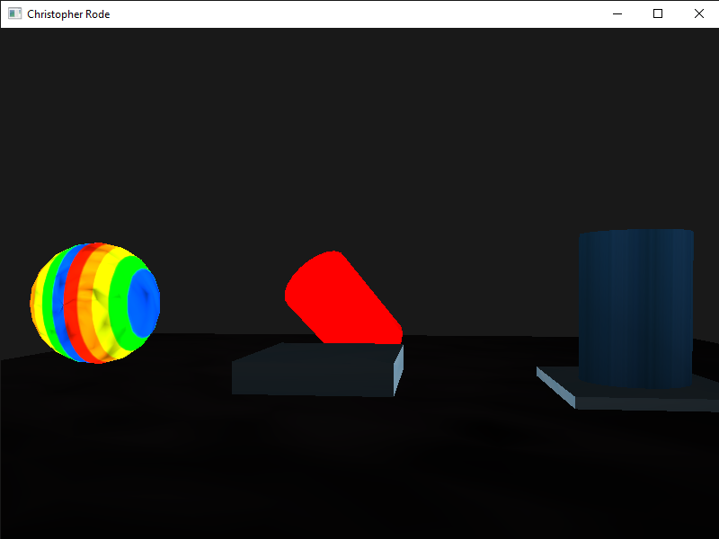
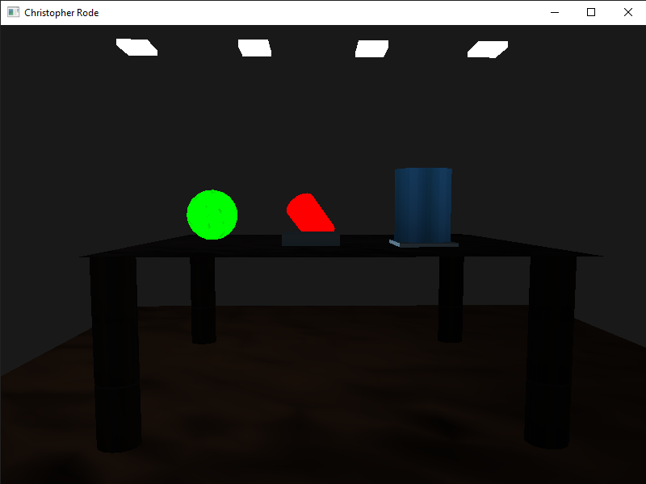

"I have been in the computer science program since June 2020, which puts me at a little less than four years remaining to complete my degree. Throughout my schooling at SNHU, I experienced many distinct aspects of computer science. The area of computer science that interested me the most was software development. As I approach the completion of my Computer Science degree here at SNHU and embark on my journey to become a software developer, I want to reflect on my skills and strengths gained throughout my coursework."
In CS-250: Software Development Life Cycle, I gained skills in collaborating in a team environment and communicating with stakeholders. This class did not involve actual coding but instead taught me about the SDLC and how to work within a software development team. It taught me about the different methodologies and stages involved in the software development life cycle and how to master the Agile development process. In CS-260: Data Structures and Algorithms, I strengthened my skills in data structures and algorithms. I gained skills by applying appropriate data structures for effectively organizing data given the requirements and constraints of various problems, implementing technically sound algorithms that accurately perform required functions, employing basic algorithms and common data structures in developing effective computer programs, and assessing foundational algorithms and data structures for their use in problem-solving. Throughout the program, I gained skills in software engineering. Specifically in CS 320: Software Testing, Automation, and Quality Assurance, where I applied software engineering testing strategies and practices as part of the software development life cycle, including requirements analysis, verification and validation, and quality management. I also gained skills in databases throughout my time at SNHU. In DAD-220: Intro to Structured Database Environments, I learned to create structured database environments that incorporate basic processing functionality and allow for data management, data manipulation, and data analysis with SQL. Additionally, in CS-465: Full Stack Development, I created a webpage that worked with a Mongo database. Lastly, I gained skills in security throughout this program as well. In CS 305: Software Security, I learned about advanced security concepts and how to develop secure code that complies with security testing protocols. I also learned how to apply encryption technologies and techniques to communicate securely in CS 305.
In this portfolio, I will use the CS 330: Computational Graphics and Visualization final project as my artifact for all three of my enhancements. The idea for this project was to recreate a 2D scene into a 3D scene using the OpenGL API. The objects in this scene are made up of basic shapes such as cubes, cylinders, spheres, and planes. This project was created over a few weeks in the CS 330: Computational Graphics and Visualization course. Throughout the three enhancements, I will show my skills in software design and engineering, algorithms and data structures, and databases. Before enhancing this artifact, I created a code review video that goes over the original artifact, analyzing the structure, documentation, variables, arithmetic operations, loops and branches, and defensive programming for areas of improvement. It also outlines several enhancements that were then implemented. After the code review is the project section where the three enhancements are. There are links to the code review video and original code in the code review section and links to the original and enhanced code in the project section. The links for the code will take you to my GitHub where the code is hosted. Each enhancement has a narrative with it that goes over the artifact and the enhancement that was done to the artifact. It also goes over the skills that I showcased with the artifact and its enhancements as well as the CS 499 course outcomes that were met and how they were met.
I perform a code review in a video for each artifact selected in my initial plan. In this code review, I analyze existing code for weaknesses, limitations, and vulnerabilities and explain my plan for enhancements. These code reviews are a walk-through of existing code and planned enhancements
The artifact used was the CS 330: Computational Graphics and Visualization Final Project. The idea for this project was to recreate a 2D scene into a 3D scene using OpenGL. The objects in this scene are made up of basic shapes such as cubes, cylinders, spheres, and planes. This project was created over a few weeks in the CS 330: Computational Graphics and Visualization course.
Here is a screenshot of the scene before the enhancement was done.

"I selected this artifact because it was one of the more complex programs that I made during my time at SNHU, and I knew there were many enhancements that could be done to this project. The skills this artifact showcases are skills in building collaborative environments by making comments and having a modular design that other programmers familiar with C++ and OpenGL can understand, add, and change the program. The artifact was improved by expanding more on the original design. I added to the design by turning the platform into a standing desk. I did this by adding legs to the platform and creating a floor that the desk is standing on."
Here is a screenshot of the scene after the enhancements were done. We now have four legs and a floor to stand on.

When enhancing this project, I learned even more about how important comments are in code. Without comments, I don't know if I would have been able to figure out what each part of the code did. Luckily, I had comments already in the code to help me understand what each piece of the code was doing. One challenge I faced was getting my legs into the right position. This takes time as you must make an educated guess on the correct x, y, z coordinates to get the legs and the floor in the correct position. Getting over this challenge required some guess and check. I would change the coordinates and check to see if the shape was in the right spot or how much closer it was to the right spot. The camera movements that I already coded into the program helped a lot as I could get closer to the legs to make sure they were perfectly even.
CS-499 Course Outcomes Reached
[CS-499-01] Employ strategies for building collaborative environments that enable diverse audiences to support organizational decision-making in computer science.
I met this outcome through the comments, in code documentation of changes and a modular structure that any programmer can hop in and edit. I added inline comments where I had enhanced the code along with some other areas that were not commented. Also, I added the overall functionality of each code file in the header of each file.
[CS-499-02] Design, develop, and deliver professional-quality oral, written, and visual communications that are coherent, technically sound, and appropriately adapted to specific audiences and contexts
I met this outcome through the code review where I talked about the code and the enhancement plan that was carried out. I also reached this by providing comments where the code was enhanced using the best computer science practices and a written narrative of the enhancement. Lastly, this project uses DLLs, headers and other resources developed by others, which demonstrates my ability to work with peer-created code.
[CS-499-04]Demonstrate an ability to use well-founded and innovative techniques, skills, and tools in computing practices for the purpose of implementing computer solutions that deliver value and accomplish industry-specific goals.
I met this outcome by meeting the enhancement criteria I set myself and the entire project's criteria. I also used the best computer science practices when making the project and enhancement. Additionally, I showed skills in using the OpenGL API along with the Visual Studio IDE and the C++ coding language by using those tools to add more to the program, such as incorporating legs and a floor.
The artifact used was the CS 330: Computational Graphics and Visualization Final Project. The idea for this project was to recreate a 2D scene into a 3D scene using OpenGL. The objects in this scene are made up of basic shapes such as cubes, cylinders, spheres, and planes. This project was created over a few weeks in the CS 330: Computational Graphics and Visualization course.
I selected this artifact because it was one of the more complex programs that I made during my time at SNHU, and I knew there were many enhancements that could be done to this project. This project shows skills and abilities in algorithms and data structures because there are many algorithms in the program that are creating the shapes. I improved this artifact by optimizing it with instancing algorithms. These algorithms are used to increase the program's performance by only sending the shape data to the GPU once and then rendering it multiple times. For example, before the enhancement, there were multiple instances of the same cylinders being rendered. Each cylinder was sending data to the GPU even though it was the same data. Now, the data is only sent once, and we get the same number of cylinders in the program with increased performance. This changes the time complexity (Big O) from O(n), where 'n' is the number of cylinders being made, to O(1). Also, the code is more concise and easier to maintain since the rendering logic for all the cylinders is contained within a single loop. This reduces the repetitive code for each cylinder, making it easier to manage and less prone to errors.
Below is a screenshot of the cylinder instancing algorithm for the legs of the desk. This image shows my skills in implementing algorithms that improve the time complexity, increasing program performance and reducing redundant code. This also shows my skills in creating easily readable code and proper documentation that adheres to computer science best practices.
Additionally, I added an FPS counter to the program. This displays the current FPS in the window while the program is running. An FPS counter is an effective way to tell how well the program is performing. I have provided screenshots of the FPS counter code below.
Here are the screenshots showing the function created to calculate the frames per second as well as the code for displaying the FPS in the window.
While enhancing this artifact, I learned how important algorithms can be and how much they can change a program. Adding the algorithm increased the program's performance by reducing the amount of data sent to the GPU. The instancing algorithms also decreased the amount of code in the source file. There was a lot of code deleted after adding the algorithm because it was not needed anymore. If I used instancing algorithms when I originally made the code, there would have been a lot of time saved. Getting the algorithm running was a little bit of a challenge. There were errors in the code when I first added it but after a little research, I figured out the problem and the code ran as intended.
CS-499 Course Outcomes Reached
[CS-499-01] Employ strategies for building collaborative environments that enable diverse audiences to support organizational decision-making in computer science.
I achieved this outcome through comprehensive comments, documentation of code changes, and a modular structure that allows any programmer to easily understand and modify the code. I included inline comments to explain enhancements and addressed areas lacking comments. Additionally, I provided an overview of each code file's functionality in the header
[CS-499-02] Design, develop, and deliver professional-quality oral, written, and visual communications that are coherent, technically sound, and appropriately adapted to specific audiences and contexts.
I achieved this outcome through a thorough code review where I discussed the code and outlined the enhancement plan that was implemented. Additionally, I supplemented this by adding comments that adhere to best computer science practices, explaining the enhancements made. Furthermore, I provided a written narrative detailing the enhancement process. Lastly, this project utilizes DLLs, headers, and other resources developed by others, showcasing my ability to effectively collaborate and work with peer-created code.
[CS-499-03]Design and evaluate computing solutions that solve a given problem using algorithmic principles and computer science practices and standards appropriate to its solution, while managing the trade-offs involved in design choices (data structures and algorithms)
I achieved this outcome by developing an instancing algorithm to render shapes, showcasing optimization techniques and considerations of time complexity. This approach significantly enhanced the program's performance while minimizing redundant code, highlighting my proficiency in algorithms and performance optimization.
[CS-499-04] Demonstrate an ability to use well-founded and innovative techniques, skills, and tools in computing practices for the purpose of implementing computer solutions that deliver value and accomplish industry-specific goals.
I accomplished this outcome by fulfilling both the enhancement criteria I established and those of the entire project. I adhered to the best computer science practices throughout the development process. Moreover, I demonstrated proficiency in utilizing the OpenGL API, Visual Studio IDE, and C++ coding language to implement tools and integrate an algorithm aimed at enhancing program performance.
The artifact used was the CS 330: Computational Graphics and Visualization Final Project. The idea for this project was to recreate a 2D scene into a 3D scene using OpenGL. The objects in this scene are made up of basic shapes such as cubes, cylinders, spheres, and planes. This project was created over a few weeks in the CS 330: Computational Graphics and Visualization course.
I selected this artifact because it was one of the more complex programs that I made during my time at SNHU, and I knew there were many enhancements that could be made to this project. I showcase skills and abilities in software development by creating quality code that includes readability, maintainability, efficiency, and adherence to best practices and coding standards. Additionally, I demonstrate skills in software architecture by using appropriate design patterns and modularization. Throughout the code, I provide documentation with inline comments and clear descriptions of the overall functionality of each code file in the header. Lastly, I demonstrate skills in performance optimization by using algorithms to boost overall performance. In this enhancement, I improved the artifact by creating a SQL database that stores the code for my shapes. I accomplished this by creating a database called 'ShapeCode' and a table within it called 'Shapes.' The 'Shapes' table includes fields for shape ID, name, data, and rendering data. The shape data is the information needed to be called into the source code, while the shapes render data is the information required in the while loop that renders the shape. This allows for a more collaborative environment because anyone can recreate the shapes that I already made in my code and add them to theirs. The shapes stored in the 'Shapes' table include the sphere, cylinder, plane, cube, and light cube. As more shapes are created, this table can expand with a simple SQL insert command. Below, you can see the sphere code that was queried and inserted into the source code.
Here is the Shape data being inserted into the source code with proper documentation of the modification.
Here is the sphere shape render data being inserted into the while loop that renders the shapes with proper documentation of the modification.
Additionally, I created another database called 'ProgramFiles' on the same server to store the program's files, such as the CPPs and header files, along with the 'glad' files and the 'glew32' DLL file required to run this code. This setup allows for snapshots of the program to be taken, adding a layer of security to the code. In the event that the original program is lost, there will be a database backup available. Furthermore, if anyone wishes to create a new OpenGL program, these databases can be utilized to facilitate the process. The code for the shapes can be easily queried and inserted into the program, saving time and effort in figuring out how to create the shapes from scratch.
Below is a screenshot of the “ProgramFiles” table being created and queried using the select * from ProgramFiles command while using best computer science practices.
The below screenshot shows Data being queried from shapeCode database inside of visual studios to show my skill in using multiple different tools in computer science.
Throughout the process of enhancing and modifying the artifact, I deepened my understanding of technical concepts and tools related to software development, such as SQL and Microsoft SQL Server Management Studio. While I was a bit rusty on SQL due to not having used it for some time, this enhancement provided an effective opportunity to sharpen my SQL skills. Initially, it was challenging to get started with creating a new database and tables, given my lack of recent experience with SQL. However, with some assistance from online resources, I was able to overcome these challenges and complete the task successfully.
CS-499 Course Outcomes Reached
[CS-499-01] Employ strategies for building collaborative environments that enable diverse audiences to support organizational decision-making in computer science.
I achieved this outcome through comprehensive comments, code documentation of changes, and a modular structure that enables any programmer to easily understand and edit the code. I included inline comments to explain enhancements and addressed areas lacking comments. Additionally, I provided an overview of each code file's functionality in the header of each file. Lastly, I reached this outcome by creating a database that assists users in creating similar programs to mine using the code I've already developed.
[CS-499-02] Design, develop, and deliver professional-quality oral, written, and visual communications that are coherent, technically sound, and appropriately adapted to specific audiences and contexts.
I accomplished this outcome through a thorough code review where I discussed the code and the enhancement plan that was implemented. Additionally, I provided comments where the code was enhanced, adhering to best computer science practices, and offered a written narrative of the enhancement. Lastly, the project utilizes DLLs, headers, and other resources developed by others, showcasing my ability to effectively collaborate and work with peer-created code.
[CS-499-04] Demonstrate an ability to use well-founded and innovative techniques, skills, and tools in computing practices for the purpose of implementing computer solutions that deliver value and accomplish industry-specific goals.
I achieved this outcome by fulfilling both the enhancement criteria I set for myself and the criteria for the entire project. I demonstrated my skills in SQL by creating two separate SQL databases using Microsoft SQL Server Management Studio to meet the goals of this enhancement. Furthermore, I adhered to the best computer science practices throughout the project and enhancement process. Additionally, I showcased my proficiency in utilizing the OpenGL API, Visual Studio IDE, and the C++ coding language.
[CS-499-05] Develop a security mindset that anticipates adversarial exploits in software architecture and designs to expose potential vulnerabilities, mitigate design flaws, and ensure privacy and enhanced security of data and resources.
I achieved this outcome by securing the databases with a password accessible only to authorized users, including myself and those granted permission. Storing the code in a database provides an additional layer of protection against scenarios where the program is lost or deleted from the computer.